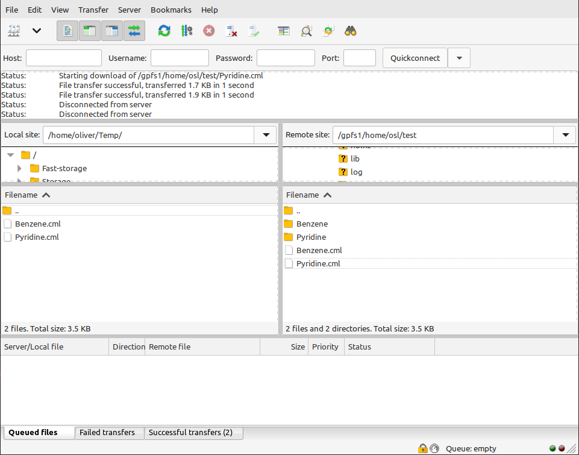
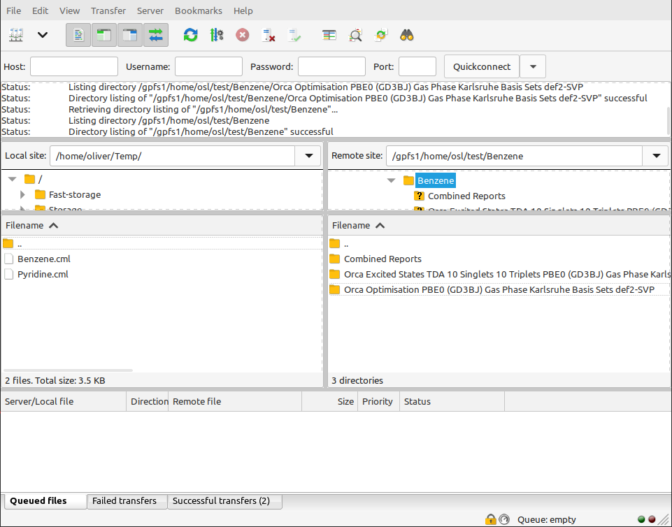

Checking the status of your calculation
Once your calculation has started, you next need a way of knowing when it’s done!
Unlike most other types of computer programs, you don’t normally ‘wait’ for a computational chemistry program to finish before carrying on with your day. Once the calculation has been submitted, you can close your connection to the server or even turn of your computer, the computational server will keep working in the background without you. The flip-side is that the computational process could take many hours to complete. If your computational server is particularly busy, it could even take several hours for your computation to start.
Digichem will manage the entire process automatically without you checking in, but you still need a way of knowing when the calculation is done so you can obtain the results. This section of the documentation will cover the various ways that you can do this.
Checking the flags folder
Digichem keeps track of the progress of each calculation using a special Flags folder. You can simply check which files are in this folder to work out the status of your calculation.
You can do this using either a graphical file manager (FileZilla, WinSCP etc.) or the terminal, whichever is easiest.
1. Log in
Start by logging in to your computational server as normal. In this example, we will use FileZilla:
You will see that two new folders have been created; one for each of the molecules we submitted earlier.
2. Open the molecule folder
Open the folder of the molecule you wish to check. This will reveal more folders, one for each calculation that you have submitted. In this case, we have one folder each for the optimisation and excited states calculations:
3. Open the calculation folder
Open the folder of the calculation you wish to check. You will now see a number of folders containing different types of data from the calculation:
The Input folder contains input files for the calculation, while Output contains the raw, unprocessed output from the calculation engine. Logs contains logs and other messages from Digichem, and is useful for troubleshooting. Note that some additional folders (such as Results and Report) will appear once the calculation has finished.
Flags contains the calculation status that we are interested in, so open this.
4. Open the flags folder
We can now determine the status of this calculation by observing which files are present.
In this example, the calculation is in the PENDING state. This means the calculation has been submitted, but has not yet started (because the server is too busy right now). The calculation will start automatically once enough server resources become available (number of CPUs, memory etc.).
Later, the calculation will enter the RUNNING state, indicating that the calculation has now started:

And later still (after the calculation is finished), the calculation will enter the DONE state. This indicates that Digichem will make no further changes to this calculation folder, and you are free to download the results or delete the folder as you see fit.
Using the command line
You can also check the Flags folder of a calculation directly on the command line:
1. Log in
As usual, begin by logging in to your computational server (if you haven’t already). For this
example, we will use the ssh program. After logging in, you’ll be greeted with a blank screen
like this:
2. Run ls
The command to check the contents of a folder is ls (short for ‘list’). If you run this command you’ll
see the files and folders currently available on the server:
In this example, we can see two folders (Benzene and Pyridine, shown in blue) and two files (Benzene.cml and Pyridine.cml),
corresponding to the two molecules that we submitted in the earlier tutorial.
Note
The exact colours used to represent files and folders will depend on your terminal program, and they might look slightly different to these examples.
To check the contents of one of these folders, type ls again followed by the folder name, for example:
We can now see the folders corresponding to the individual calculations.
3. Run ls again
To check the status of a calculation, simply run ls again, this time followed by the name of the calculation folder.
As these folders contain whitespace (’ ‘) in their name, we’ll need to use quotation marks (”) to wrap them. So to check
the status of the optimisation calculation that we saw above, we would use this command:
$ ls "Benzene/Orca Optimisation PBE0 (GD3BJ) Gas Phase Karlsruhe Basis Sets def2-SVP/Flags"
Like so:
Typing the full folder name is a hassle, so it’s generally recommended to copy and paste the folder name where possible.
4. How to avoid typing long filenames
Fortunately, linux has a handy feature that means you don’t need to type (or even copy-paste) the long folder name. If you begin typing the name of a file, then press the ‘tab’ key on your keyboard, Linux will try and guess the rest of the filename for you.
For example, instead of typing Benzene, we could just type B:
And then press ‘tab’:
And Linux will guess the rest of the filename!
Note
If you press ‘tab’ and nothing happens, that normally means there is more than one filename that matches. Either press ‘tab’ a second time to get a list of possible options, or type more of the filename so only one file matches.
Now, to open the same optimisation folder that we saw above, we can just type /"Orca Opt":
And press tab again:
Note
In this example, Linux has replaced the quotation marks around "Orca Opt" with backspaces instead (Orca\ Opt...).
These do the same things as the quotation marks (they make it so the whitespace will be interpreted correctly).
Lastly, we can type /Flags/ to check the flags folder, and then press ‘enter’:
5. Checking multiple calculations at once
The ls command can check multiple folders at once, which is useful to check multiple calculations simultaneously.
For example, if we wanted to check the contents of both the Benzene and Pyridine folders, we can specify both
after the ls command like this:
Which will then show the contents of both folders:
We can then specify the paths to the relevant Flags folders to check the calculations. For example, to check the optimisation of both Benzene and Pyridine, we could use a command like this:
$ ls "Benzene/Orca Optimisation PBE0 (GD3BJ) Gas Phase Karlsruhe Basis Sets def2-SVP/Flags" "Pyridine/Orca Optimisation PBE0 (GD3BJ) Gas Phase Karlsruhe Basis Sets def2-SVP/Flags"
Like so:
6. Using wildcards
This works fine, but typing out all these filenames is still a hassle. Fortunately, Linux has another trick that we can use to make this even easier.
The * character is called a ‘wildcard’, and it means ‘match all files’. We can use this to quickly check
many folders at once without having to type them all out. For example, to check both the Benzene and Pyridine folders,
we can just type:
Which shows everything at once:
Now, to check the status of both the optimisation and excited states calculations for both molecules, we can add a second
* character after a forwards slash, followed by /Flags, like this:
After pressing enter, we’ll get the status of all four calculations:
Which, in this case, have all finished successfully.
What do the different statuses mean?
PENDING, RUNNING, and DONE are the main three statuses to look out for, but Digichem uses some others too. In particular, POST implies that the calculation itself has completed, but Digichem is still performing its own post processing (such as rendering image files), which can take a little while.
See the below table for a fill list of available flag files and their meaning.
Name |
Description |
|---|---|
PENDING |
The calculation has been submitted but has not yet begun; most likely because it is waiting in the queue. |
STARTED |
The calculation has begun. This flag is never deleted, so it is useful for confirming that the calculation at least started, even if it did not finish. |
RUNNING |
The calculation is currently ongoing. |
SUCCESS |
The calculation finished successfully. |
CONVERGED |
The optimisation converged successfully. This flag is only used for optimisation calculations. |
NOT_CONVERGED |
The optimisation did not converge successfully. This flag is only used for optimisation calculations. |
CLEANUP |
The calculation has finished (successfully or otherwise) and Digichem is currently cleaning up (saving files etc). |
ERROR |
The calculation has stopped because an error occurred. |
POST |
The calculation has finished and Digichem is currently performing post analysis (writing result and report files). |
DONE |
All work (including post-analysis) has been completed; Digichem will not make any changes after this flag. It is safe to move, download or delete the calculation folder. |